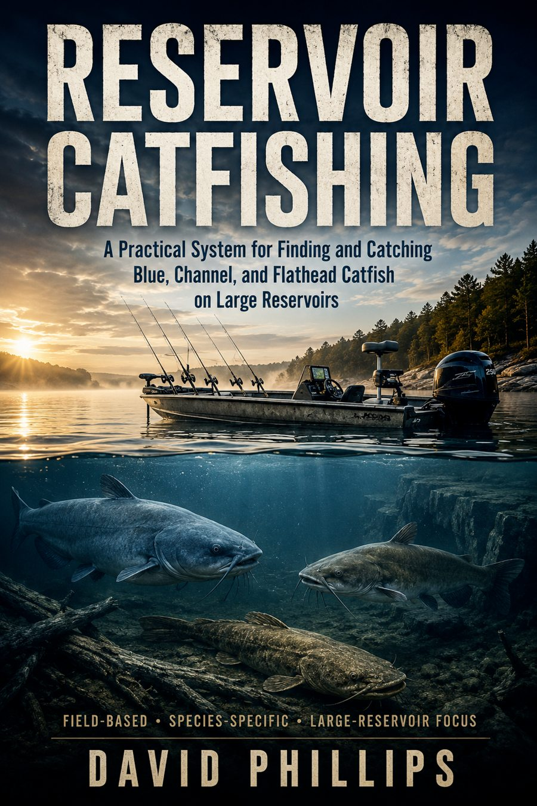
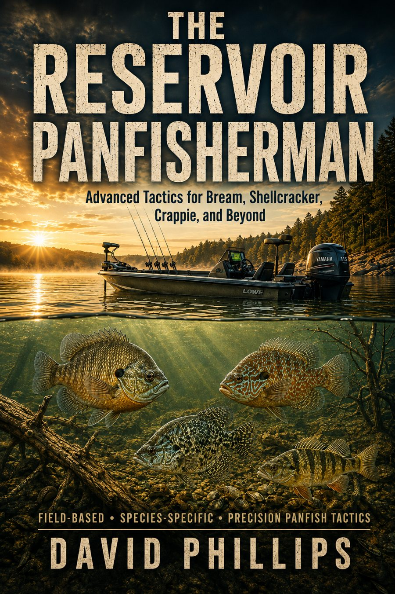
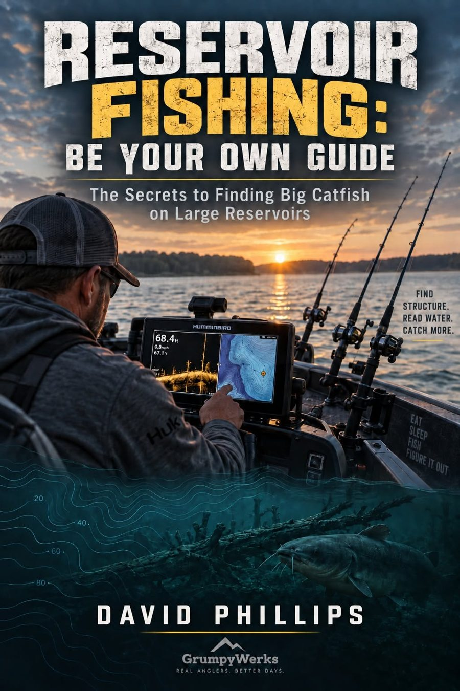

Fishing Books & Guides
Educational resources for reservoir anglers, from catfishing techniques to reading lake structure and planning fishing trips.

Reservoir Catfishing
A Practical System for Finding and Catching Blue, Channel, and Flathead Catfish on Large Reservoirs
Most catfishing books tell you what bait to use or where somebody caught fish. This illustrated field manual focuses on understanding why fish are there, and how to consistently find them yourself.
Buy on AmazonRead full book description
Written for experienced anglers looking for greater consistency on large reservoirs, it examines location, seasonal movement, structure, forage, boat positioning, sonar interpretation, bait presentation and water selection.
Inside you'll learn how to:
- Read river and creek channels, flats, points, ledges, humps, bends, timber and current.
- Understand how blue, channel and flathead catfish use the same reservoir differently.
- Follow seasonal movements rather than rely on old fishing spots.
- Select and prepare cut bait and live bait, and use dependable rigs without unnecessary complexity.
- Position your boat for anchoring, drifting, dragging and ledge fishing.
- Recognize bait, suspended fish, bottom-hugging fish and structure on sonar.
- Understand thermoclines and why the deepest water is not always the best.
- Build a rod spread to learn exactly where fish are positioned.
- Handle, process, store and freeze harvested catfish, and practice responsible selective harvest.
Full-color chapter artwork and technical illustrations cover reservoir anatomy, channel bends, habitat, circle-hook bait placement, rigs, thermoclines, bait preparation, anchor geometry, ledge fishing and sonar.
Format: Fully illustrated digital ebook
Author: David Phillips
Focus: Blue Catfish · Channel Catfish · Flathead Catfish · Large Reservoirs
This isn't a collection of secret GPS coordinates. It's a system for learning how to find your own fish.

The Reservoir Panfisherman
Advanced Tactics for Bream, Shellcracker, Crappie, and Beyond
A complete, field-driven system for finding bluegill, shellcracker, crappie, yellow perch, warmouth, redbreast, and other reservoir panfish throughout the year.
Read full book description
This is not a basic “put a worm under a bobber” fishing book.
It is a practical, field-driven guide built around how panfish actually use large man-made reservoirs.
Learn to read submerged creek channels, points, flats, shell beds, brush piles, timber, roadbeds, riprap, and deep-water transitions—and match them with seasonal movement, temperature, oxygen, forage, and current.
Use 2D sonar, Down Imaging, Side Imaging, and forward-facing sonar to identify hard-bottom changes, suspended schools, baitfish, thermoclines, and high-value structure.
Species chapters include:
- Bluegill and trophy bull bream
- Shellcracker and redear sunfish
- Black and white crappie
- Warmouth, redbreast, and green sunfish
- Yellow perch and secondary panfish
Detailed instruction covers tackle, line and hook sizes, jig weights, slip-bobbers, drop-shot rigs, spider-rigging, vertical jigging, live bait, fly fishing, and deep-water summer presentations.
The special “TOP SECRET” shellcracker section addresses finding spawning beds through scouting, GPS marking, rotation fishing, polarized observation, staging-water searches, and hard-earned field clues.
Additional resources include a month-by-month calendar, tough-bite troubleshooting, bait selection, waypoint strategy, sonar interpretation, selective harvest, fish handling, field tables, fishing logs, and a reservoir-fishing glossary.
Whether fishing from a bass boat, aluminum boat, kayak, or shore, the goal is to stop fishing random water and identify repeatable patterns.
Find the structure. Find the depth. Find the food. Find the fish.

Reservoir Fishing: Be Your Own Guide
The Secrets to Finding Big Catfish on Large Reservoirs
Most anglers spend years learning a reservoir one mistake at a time. This field manual is designed to shorten that learning curve by teaching you to understand why fish are where they are, not simply rely on someone else's coordinates.
Buy on AmazonRead full book description
Reservoir Fishing: Be Your Own Guide is a complete field manual for anglers who want to understand why fish are where they are—not just be handed somebody else’s coordinates.
We break down contour maps, old river and creek channels, ledges, points, flats, current, seasonal movement, sonar interpretation, boat positioning, bait presentation, tackle, and the decisions that separate productive water from water that only looks good.
The goal is simple: learn how to take a reservoir you have never fished before, study the map, identify high-percentage areas, verify them with your electronics, position the boat correctly, and build your own fishing pattern.
No secret waypoint is going to make you a better fisherman. Learning how to find your own will.
Downloadable maps & fishing guides
Browse available Grumpywerks digital products on Gumroad. Product availability, contents and pricing are shown by the store itself.
Visit Grumpywerks GumroadShop on Amazon
Choose a title to open its Amazon product listing.
Buy Reservoir CatfishingBuy The Reservoir PanfishermanBuy Reservoir Fishing: Be Your Own GuideThese title-to-listing associations were confirmed by the publisher.